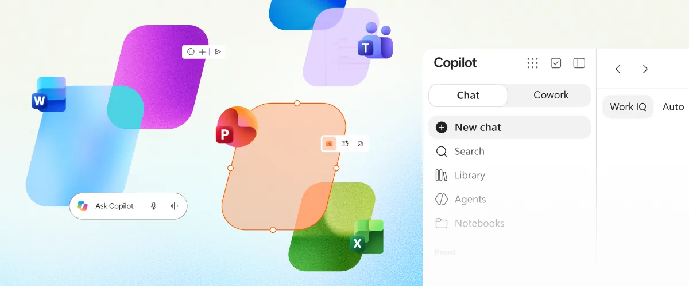
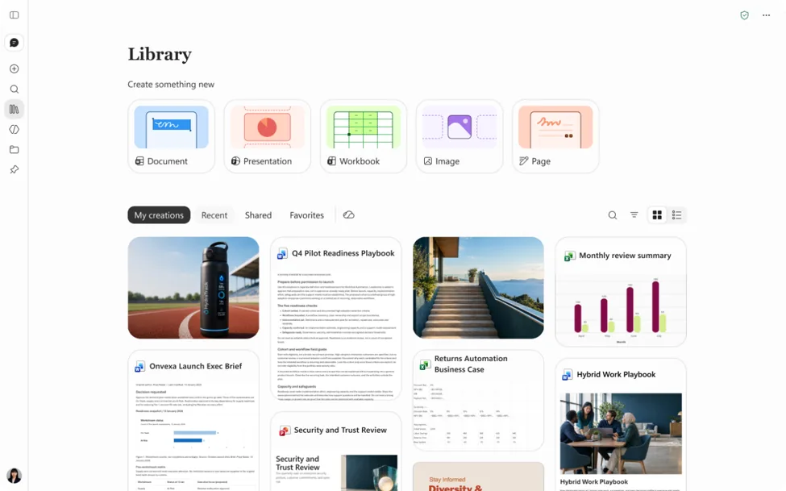
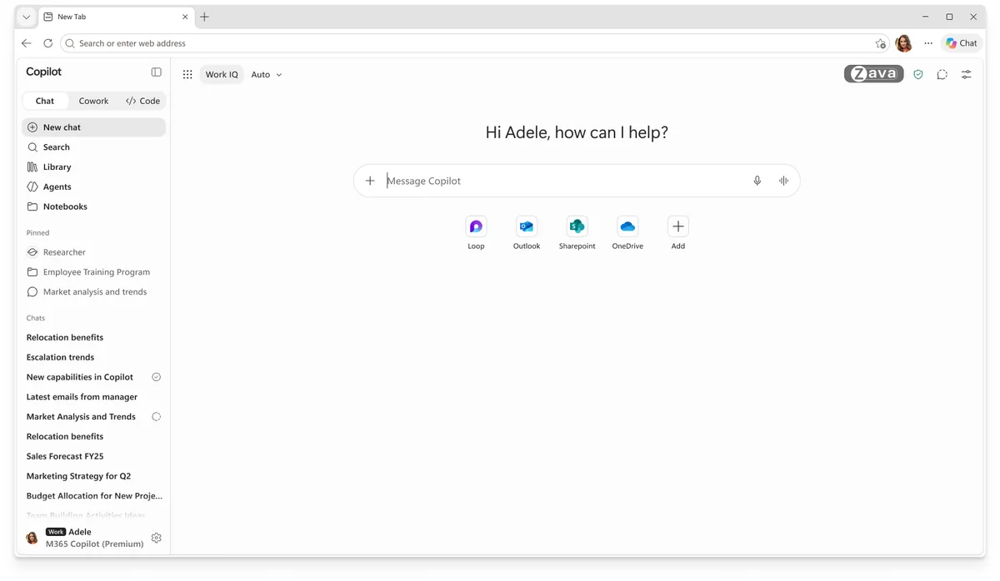

要旨 1
主な変更は4点
Home、Office in Copilot、Code、Autopilot が加わり、質問への回答に加えて、業務の委任やツールの作成、自律的な業務遂行に用途が広がります。
調査結果のご報告
本資料は、Microsoft 社が公開している情報をもとに、個人で調査・整理した参考資料です。Microsoft 社の公式見解ではありません。正確な内容は、末尾に記載した出典（Microsoft 社の公式ページ）にてご確認ください。
| 調査対象 | 2026年9月25日（米国時間）に Microsoft 社が発表した「新しい Copilot」 |
| 調査方法 | Microsoft 社の公式ブログ、技術文書（Microsoft Learn）、公式コミュニティ（Tech Community）の公開情報を確認 |
| 調査時点 | 2026年10月13日 |
要旨 1
Home、Office in Copilot、Code、Autopilot が加わり、質問への回答に加えて、業務の委任やツールの作成、自律的な業務遂行に用途が広がります。
要旨 2
管理者が有効化する先行提供の仕組み（Frontier プログラム）から順次提供されます。一般提供の時期は、多くの機能で未発表です。
要旨 3
日常的な利用は定額ライセンス、業務の委任は従量課金の対象となります。一部の画面名称や接続先も変わります。
判定：対応済み先行提供で利用可能 対応予定発表済み・調査時点で未確認 限定提供一部の顧客のみ
これまでの課題
これからの対応
判定
これまでの課題
質問は Chat、業務の委任は Cowork と、機能を切り替えて利用する必要があるこれからの対応
Chat と Cowork を Home に集約し、1か所から利用できるこれまでの課題
利用する機能を、ユーザー自身が選んでから始める必要があるこれからの対応
目的を伝えるだけで、Copilot が Chat・Cowork・Code 等の適切な機能へ振り分ける（近日対応）これまでの課題
会議・チャット・文書・メール・アプリを行き来する中で、作業の状況を把握しにくいこれからの対応
最近の作業の確認、Copilot からの提案の受け取り、中断した作業の再開を Home で行えるこれまでの画面

これからの画面
新しい Home の画面は、調査時点で公式の画像を確認できていません。
できなくなること・変わること
管理者への影響
これまでの課題
これからの対応
判定
これまでの課題
Copilot の回答を各アプリへ転記する際に、書式の崩れや版の分散が発生しやすいこれからの対応
Copilot の画面上で、編集可能な文書・ブック・プレゼンテーションを直接作成・更新できるこれまでの課題
別のアプリで、作業の背景を改めて説明し直す必要があるこれからの対応
会話と並べてファイルを表示し、会話の流れのまま追加の指示や直接編集で仕上げられるこれまでの課題
下書きが複数でき、内容をすり合わせる手間があるこれからの対応
同じファイル上で共同編集でき、変更はリアルタイムに反映されるこれまでの画面
Word・Excel・PowerPoint の各アプリの画面内で Copilot を利用
これからの画面

できなくなること・変わること
管理者への影響
これまでの課題
これからの対応
判定
これまでの課題
小規模なツールの作成にも、開発の知識や専用ツールの習得が必要これからの対応
作りたいものを自然言語で伝えるだけで、Copilot が作成するこれまでの課題
業務の成果物は主に文書・表・プレゼンテーションで、目的に合わせた道具は別途用意が必要これからの対応
アプリ、進捗管理、ダッシュボード、自動化、ワークフローまで作成できるこれまでの課題
作ったツールを安全に動かし、チームで共有する仕組みを別途用意する必要があるこれからの対応
隔離された環境（サンドボックス）で実行され、組織のテナント内でホストして共有できるこれまでの画面
開発環境や Power Apps 等の専用ツールで作成
これからの画面

できなくなること・変わること
管理者への影響
これまでの課題
これからの対応
判定
これまでの課題
業務の進捗確認や次の指示を、ユーザーが都度行う必要があるこれからの対応
名前・役割・目標を設定すると、指示を待たずに業務を遂行するこれまでの課題
チャネルやスレッドを自分で確認し、フォローアップする必要があるこれからの対応
チャネル・スレッドの確認、フォローアップ、定期業務を Autopilot が実行するこれまでの課題
ユーザーが対応できない間は、作業が進まないこれからの対応
クラウド上で稼働し、ユーザーの不在時も処理を継続するできなくなること・変わること
管理者への影響
| 検討事項 | 内容 |
|---|---|
| (1) 先行提供の対象範囲 | 初期設定は「アクセスなし」です。全ユーザーまたは特定のグループを選択できます。反映には最大3時間程度かかり、対象ユーザーには Copilot のライセンスが必要です。 設定箇所：Microsoft 365 管理センター › Copilot › Settings › View all › Copilot Frontier |
| (2) 従量課金の管理方針 | 大企業向けの契約では、管理者が支出ポリシー（対象者・上限）を作成するまで、Cowork 等は利用できず課金も発生しません。2026年12月1日以降に販売パートナー経由で新規購入する Copilot Business は、従量課金が既定で有効です。グループ単位で利用可能な AI モデルを制限できます。 |
| (3) 他社 AI モデルの利用可否 | 一部の機能は Anthropic 社等のモデルを利用します。Frontier を有効化しても自動では許可されず、管理者による個別の許可が必要です。 |
| (4) 作成アプリとプラグインの管理 | Cowork や Copilot Studio で作成されたアプリは、一覧での確認、停止、削除が可能です（Code は今後対応予定）。プラグインも管理センターで一元的に承認・ブロックできます。 設定箇所：Microsoft 365 管理センター › Apps › All apps |
| (5) 先行受け取り設定の廃止 | 一般提供済みの機能を先行して受け取る「対象指定リリース（Targeted release）」は、2027年1月に廃止されます。対象ユーザーは標準リリースまたは遅延リリースの設定に戻ります（Frontier の登録者は継続）。 |
| (6) 社内への周知 | Frontier の機能はプレビューのため、変更・停止される可能性があり、標準のサポートやサービス レベル契約の対象外となる場合があります。 |
| 区分 | 対象となる利用 | 補足 |
|---|---|---|
| 定額 （ユーザー単位） | Chat での質問・情報検索・下書きの作成、Word・Excel・PowerPoint・Outlook・Teams での Copilot | 利用量には上限があります（大多数の利用者は上限に達しない想定と説明されています） |
| 従量課金 （クレジット） | Cowork、Code、Autopilot、長時間稼働するエージェント機能、最先端の AI モデル（Astra、Fable 等） | 利用には定額ライセンスが前提です。上限等は管理者が設定します |
定額ライセンスだけではできないこと
| 時期 | 内容 | 状況 |
|---|---|---|
| 2026年9月末 | Teams の @Copilot（チャネル・会議の文脈を踏まえた回答） | 限定プレビュー開始と発表 |
| 2026年10月 | Today（メール・予定表・Teams 等から当日の対応事項を整理） | 限定プレビュー開始予定 |
| 2026年11月17日〜20日 | Microsoft Ignite（同社の年次イベント） | 追加の発表を予定 |
| 2026年内 | 個人向けプラン（Microsoft 365 Premium・Pro）での Code の提供 | プレビュー提供予定 |
| 2027年1月 | 対象指定リリース（Targeted release）の廃止 | 予定 |
本資料は、2026年10月13日時点の公開情報に基づいています。提供時期や内容は変更される可能性があります。
Home・Code の提供状況は、公式文書での確認ができていないため、発表時点の予定として記載しています。
掲載画像は Microsoft 社の公式記事（出典2・3）から引用しています。Code の画像は Microsoft Edge の新しいタブ ページの画面です。
本資料は、Microsoft 社の公開情報をもとに個人で調査・整理した参考資料です（2026年10月13日時点）。